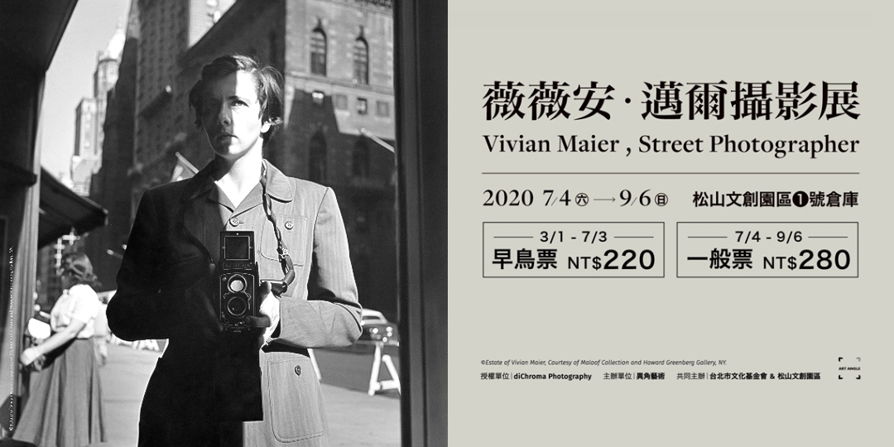

台北展再次感謝日本頂尖攝影大師舞山秀一老師、台灣人像攝影大師林聲以及台灣跨界大師黃子佼先生的特別再參展 也感謝公益財團法人日本台灣交流協會台北事務所的持續後援
多納藝術新的一年帶來兩位攝影界的翹楚，以不同視角觀看世界各個角落，未必是大家熟知的名勝景點，也非然是特色的風貌 可能是生活周遭的一花一隅，如同一沙一世界，一花一天堂，掌中握無限，剎那即永恆

邁爾（Vivian Maier）永遠是個謎，但至少她留下一筆相當可觀的影像遺產，讓我們看到20世紀後期的某種橫切面 她的街頭攝影，帶有一種內斂式的幽默感，但對於人、對於大眾文化的波動，卻有熱烈的好奇心